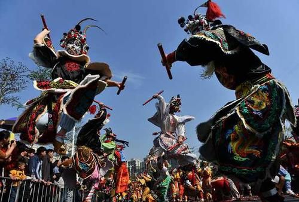
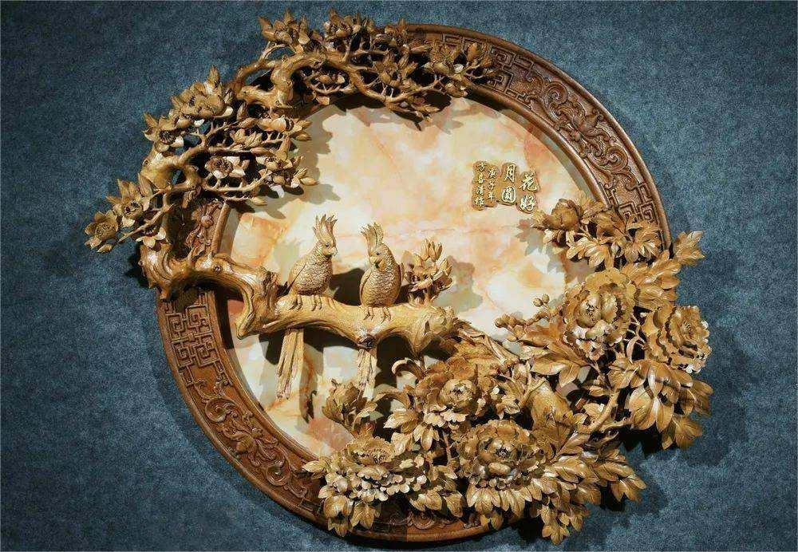
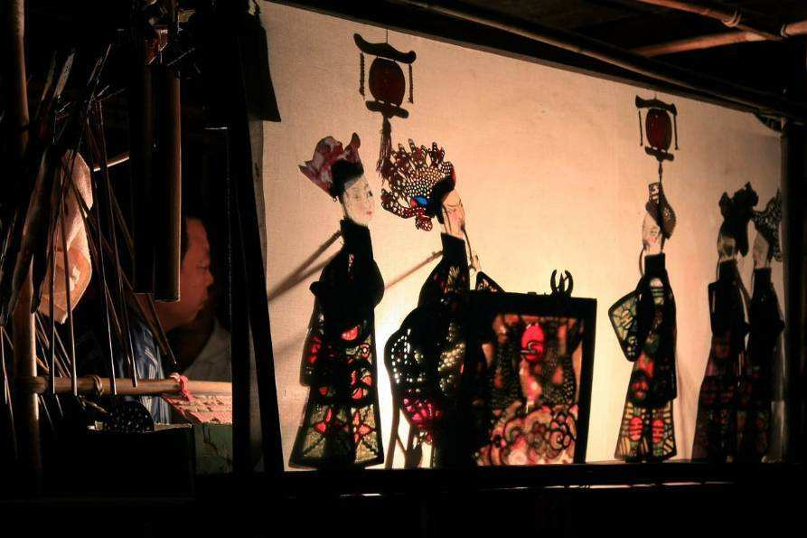
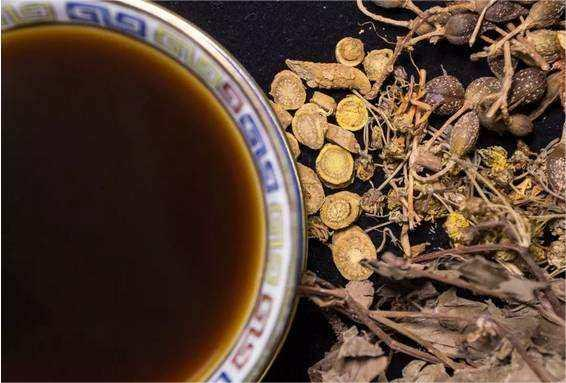

潮阳英歌
潮阳英歌是汉族民间广场舞蹈和傩文化形态的延续，在延续中有一定变化，至明代吸收北方大鼓子秧歌，逐渐演变为英歌舞，成为潮阳地区一种具有独特表现形式
的民间舞蹈艺术。潮阳英歌集戏剧、舞蹈、武术于一体，极具阳刚之气。它在实践中形成一些不同的流派风格，按舞蹈节奏的板式划分，大致可分为慢板英歌、中板英歌和快
板英歌三种。

潮州木雕
潮州木雕是广东潮州地区的一项民间雕刻艺术，主要用以装饰建筑、家具和祭祀器具。这项技艺主要流行于潮州市湘桥区意溪莲上村、西都村，同时波及饶平、
汕头、潮阳、揭阳、揭西、普宁、陆丰、大埔、五华、兴宁、梅县等县市和福建东南部沿海一带。

陆丰皮影戏
陆丰皮影戏是我国三大皮影系统之一潮州皮影的惟一遗存，陆丰市皮影剧团是广东省惟一的专业皮影剧团。陆丰皮影戏一直在民间生存、发展，有古代闽南语系
的基因，又得海陆丰民间习俗的孕育，唱腔音乐丰富，地方特色浓厚，绘画、雕刻精致，表演生动逼真，优雅可观。

凉茶
凉茶是粤、港、澳地区人民根据当地的气候、水土特征，在长期预防疾病与保健的过程中，以中医养生理论为知道，以中草药为原料，食用、总结出的一种
具有清热解毒、生津止渴、祛火除湿等功效，伴随着人们日常生活的饮料。它有特定的术语指导人们日常引用，既无剂量限制，也无需医生指导。